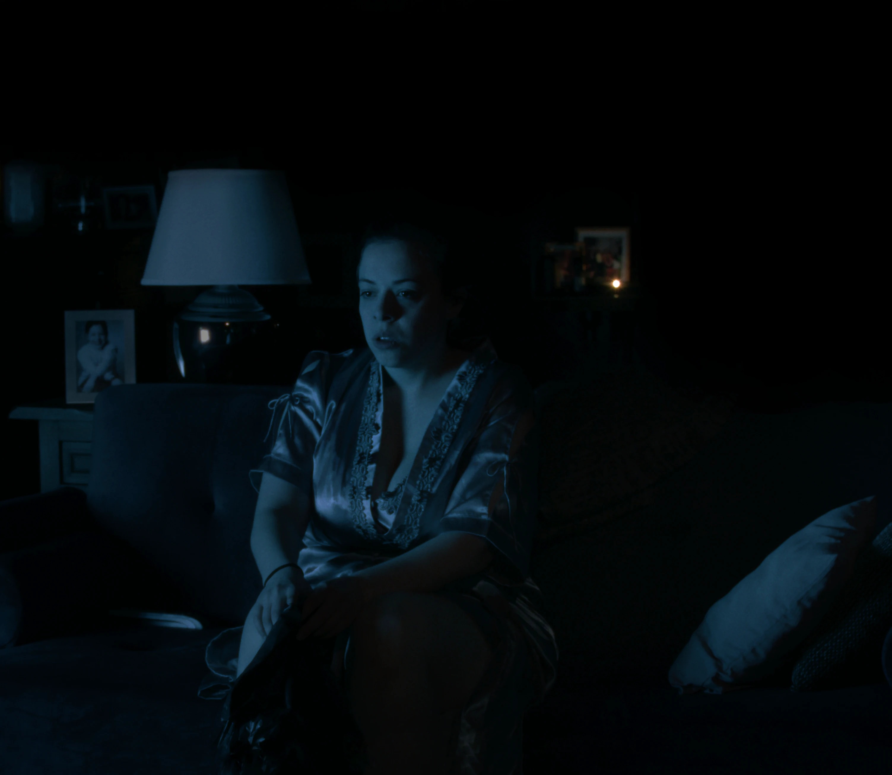
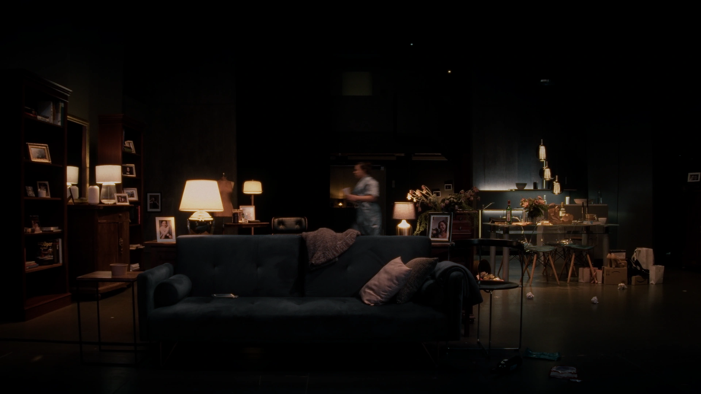
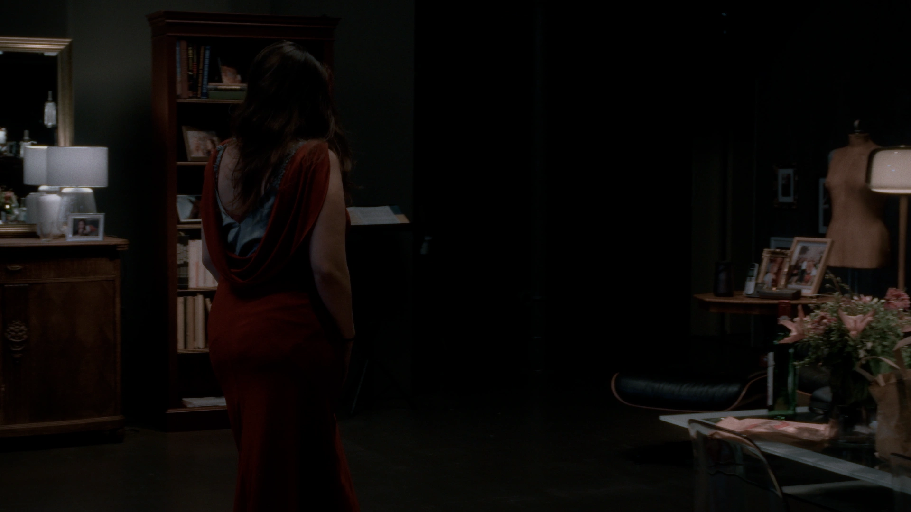
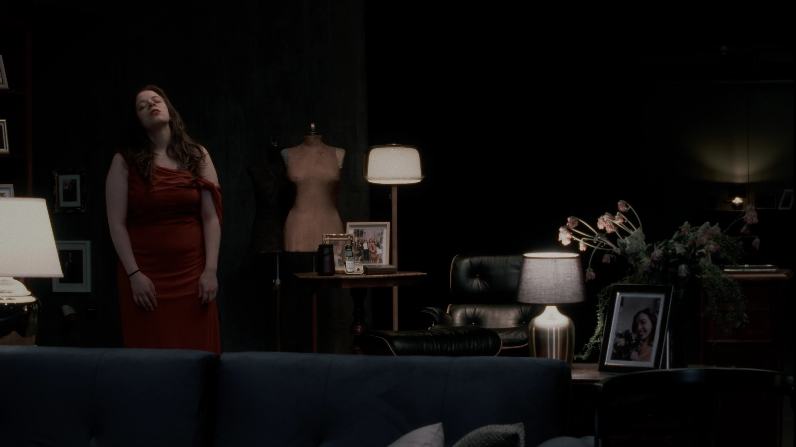
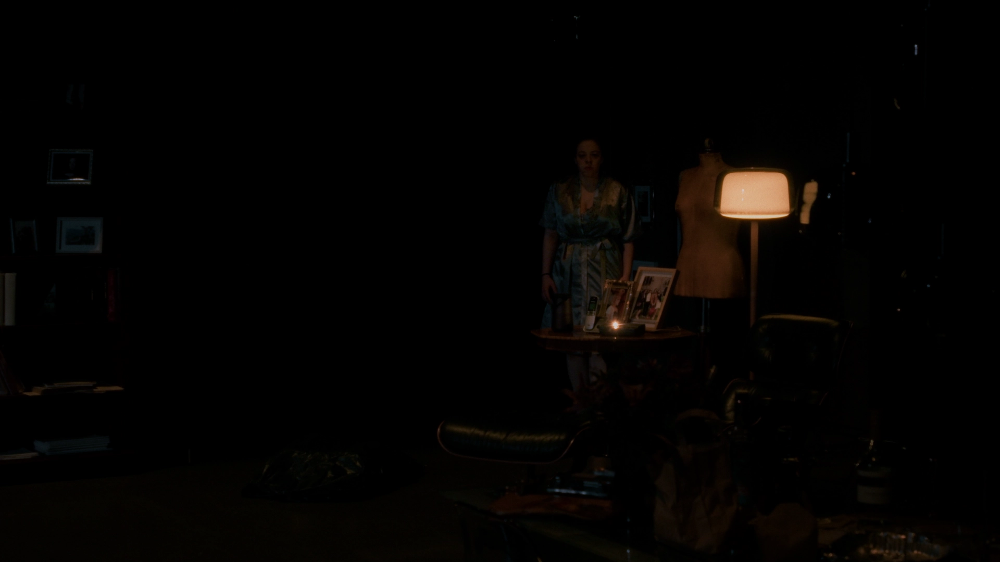
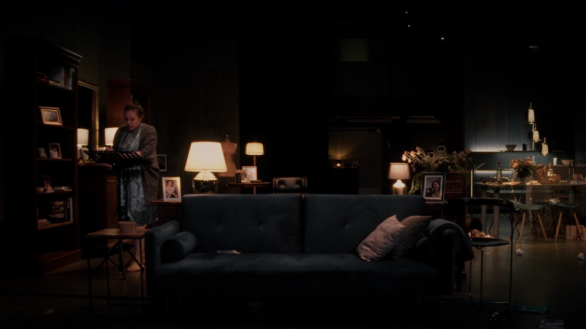
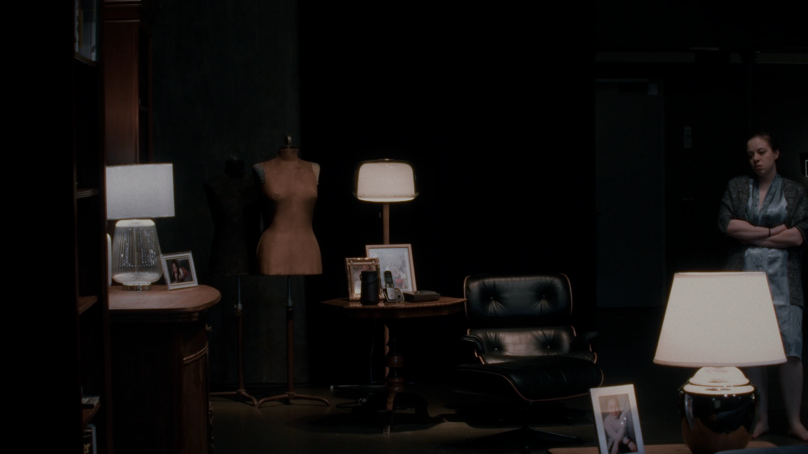

PROJECTS
The Answering Machine
Feature Film








Production Team
Director: José Cortés
Screenplay: José Cortés, Steffen Küster, Juliane Gabriel
Producers: Ulfa von den Steinen, Alexej Mend
Music: Paul Roßmann
Sound Design: Theodor Petrea
Director of Photography: Martin Kautzsch
Editor: Eduardo Melara
Production Design: Oliver Burkhardt
Executive Producer: Mark Lübke
Costume Design: Linda Rodenheber
Light Design & Color: Martin Siemann
Presented by Labyrinth Pictures
Cast
Ivon Mateljan
Thomas Quasthoff
Ana Fonell
Friedrich Richter
Maria Urbanovich
Corrinne Crewe
Max Nattkämper
Danielle Daude
Christian Cartillone
Enrique Lütke Zutelgte
More Productions